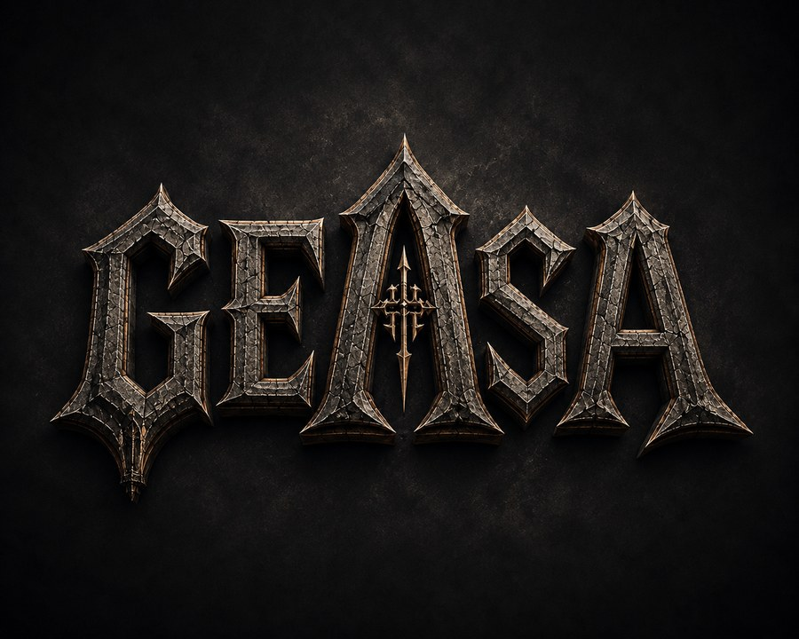
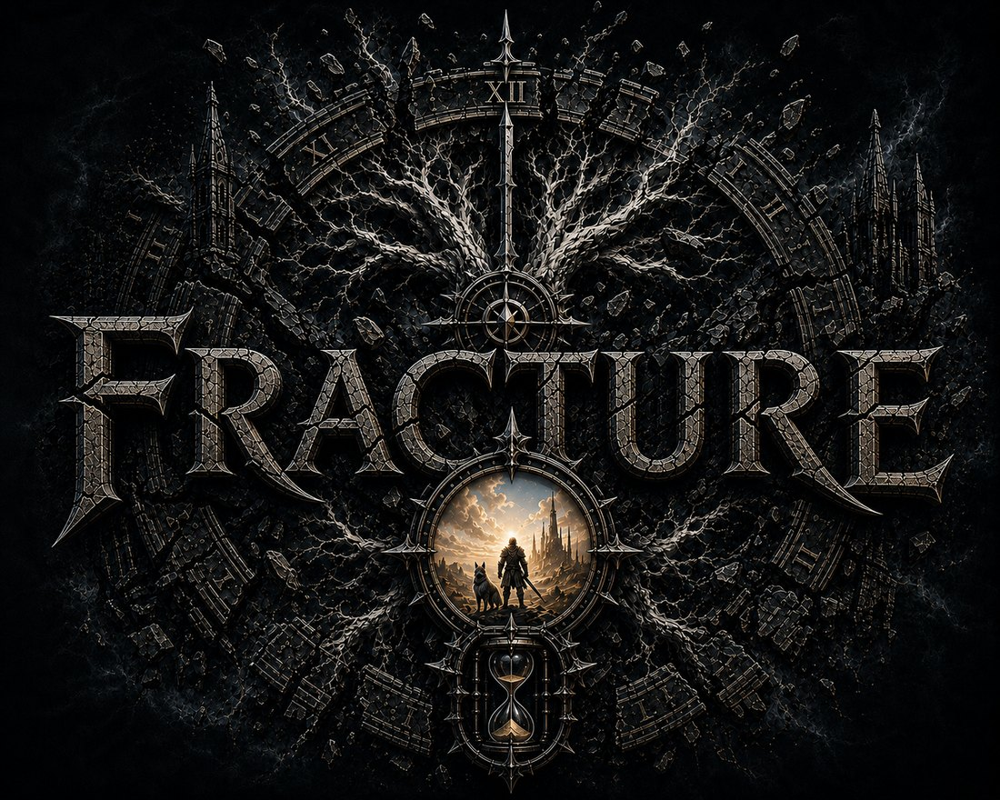
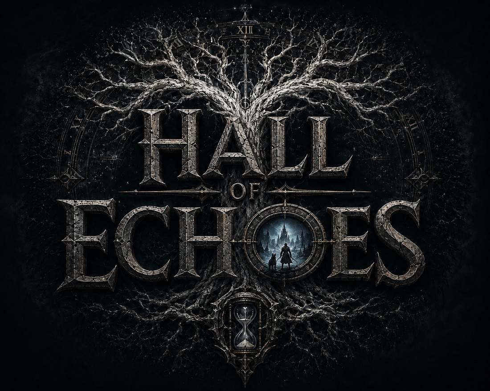
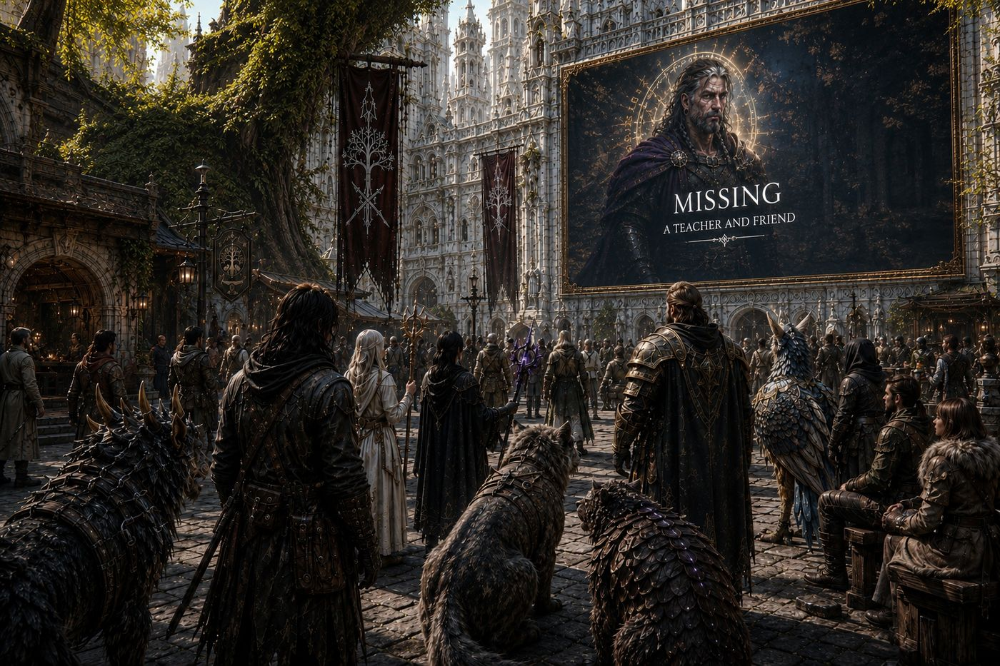

Two games. One world.
A thousand years between them.
GEASA Interactive builds worlds that hold their own authority. Nothing scales to meet you. Nothing waits politely for you to be ready. What happens in the world happened, and it keeps happening whether or not you were there to see it.
One person, in Geelong, Victoria. Both games are in active development.
The First Age

Three of you, and a world that has never had reason to be afraid.
A cooperative game set before, during and immediately after the end of everything. You will spend a long time somewhere pleasant, among people who are getting on with their lives. Enjoy it. It is not decoration and it is not a tutorial, and you will be asked to walk back through all of it afterwards.
What ends the age is knowledge. Somebody recovers it, and somebody hands it over.
A Thousand Years
Nobody wrote down what happened in between. The people who could have are the reason there was nothing left to write.
The Second Age

The same world, long after it learned to be afraid of itself.
A survival horror MMORPG. You leave a walled city to gather what the far reaches still hold, and you come back, or you do not. Something out there cannot be fought, cannot be outlevelled and has no interest in a fair encounter. Learning to live near it is the game.
You will not do it alone, and the animal that walks beside you is not decoration either.

The Capital, Second Age
Follow the build
Development notes, failures, and what the engine did that it should not have. Posted as it happens rather than when it is finished.